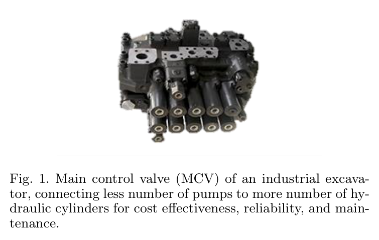
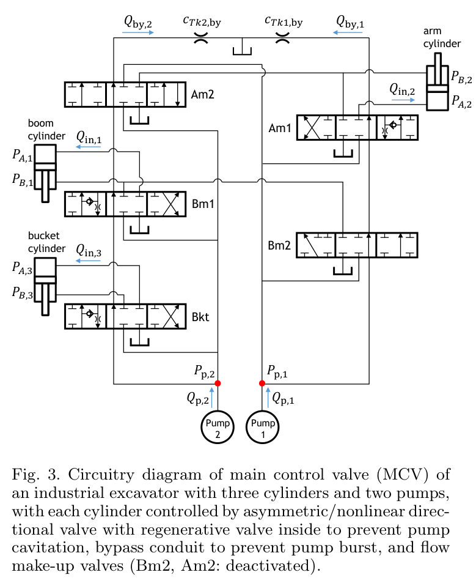
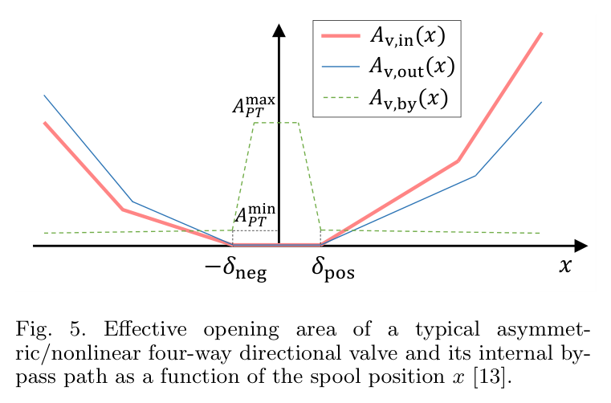
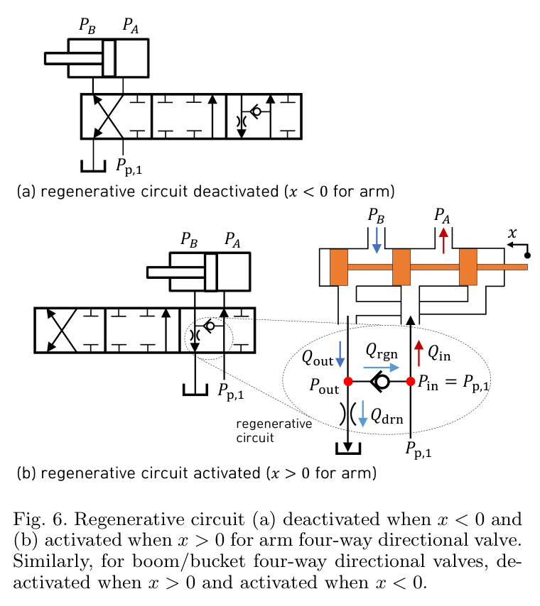
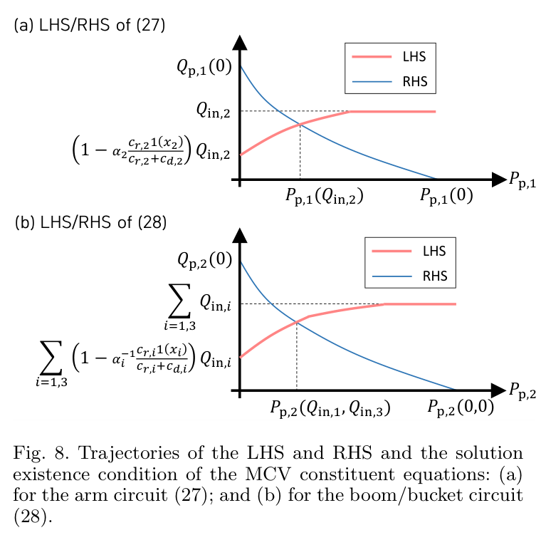
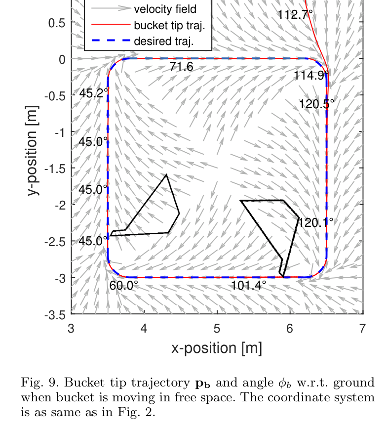
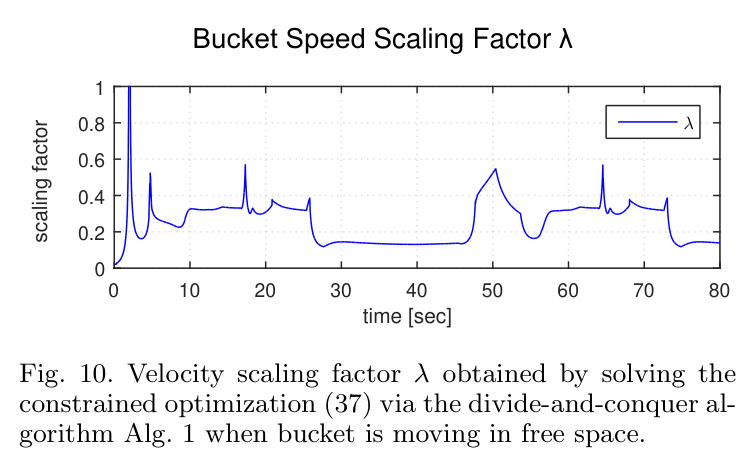
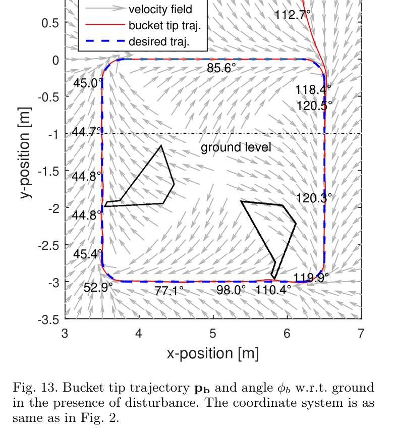
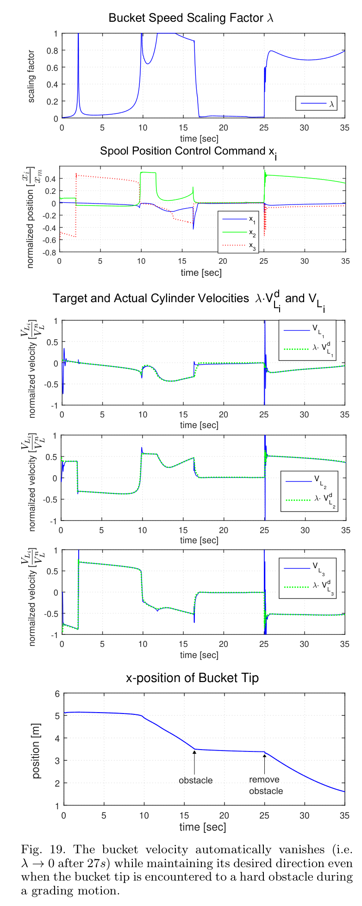

실린더는 셋인데,
펌프는 둘이다
실제 굴착기의 유압 시스템은 관절마다 독립적인 펌프가 달린 실험 장치와 다르다.
이 논문이 다루는 산업용 굴착기는 메인 컨트롤 밸브, 즉 MCV를 통해 두 펌프의 유량을 세 실린더에 나눠 준다. 펌프 1은 암을, 펌프 2는 붐과 버킷을 담당한다. 따라서 붐과 버킷의 동작은 공급 측에서 이미 연결되어 있다.
여기에 재생 체크 밸브가 더해진다. 밸브는 압력 상태에 따라 기계적으로 열리고 닫혀 유량 경로를 바꾼다. 제어기가 전환 상태를 임의로 지정할 수 없으며, 펌프가 낼 수 있는 유량 역시 제한된다. 펌프 공유, 재생 회로 전환, 유량 상한을 함께 다뤄야 하는 이유다.

공급 관계만 재구성한 개념도. 실제 모델에는 각 밸브의 재생 회로와 바이패스 경로가 함께 포함된다.
논문은 기존 연구의 상당수가 1자유도 유압 제어에 집중했다고 지적한다. 이 연구의 기여는 개별 밸브의 정밀한 묘사에 그치지 않는다. 회로 전체의 제약을 계산 가능한 형태로 정리하고, 이를 버킷의 속도장 제어와 연결한 데 있다.
복잡한 MCV를
유입 유량 세 개로 표현하기
모델은 유체의 빠른 동역학을 정상 상태 오리피스 관계로 근사한다. 압력과 밸브 개구 면적이 유량을 정하고, 실린더 면적이 유량을 속도로 바꾼다. 이 관계를 재생 회로와 펌프까지 확장하는 것이 핵심이다.

계산 가능성을 만드는 네 가지 가정
- 01기름은 비압축성으로 근사한다.
- 02유체 동역학은 기구 운동보다 충분히 빠르다.
- 03스풀 위치 제어 루프는 충분히 빠르다.
- 04실린더 변위와 양 챔버 압력을 측정할 수 있다.
① 밸브의 개구 면적을 힘–유량 관계로
실제 밸브의 개구 면적은 명령에 단순 비례하지 않는다. 양방향 특성이 비대칭이고, 데드밴드가 있으며, 스풀이 움직일수록 바이패스는 반대로 닫힌다. 논문은 이 특성을 유효 계수 cL(x)에 반영한다.

| 기호 | 의미와 해석 |
|---|---|
| cL(x) | 밸브 개구 면적과 피스톤 면적으로 결정되는 계수. 데드밴드를 접은 좌표에서 x = 0일 때 0이 되도록 표현한다. |
| Fs · 공급력 | 공급·출구 압력과 실린더 면적의 조합. 펌프가 유량 제어되므로 일정한 상수로 놓을 수 없다. |
| FL · 부하력 | 양 챔버의 측정 압력과 면적으로 계산하는 피스톤 부하력. |
| 역류 없음 | Fs − FL sgn x > 0이어야 스풀 명령 방향과 실린더 운동 방향이 일치한다. |
고전적인 유압식 Q = cx√(Ps − PL)를 비대칭 실린더와 비대칭 밸브로 확장한 것으로 읽을 수 있다. 핵심은 원하는 방향으로 움직일 만큼의 공급력 여유가 있는가다.
② 압력에 따라 바뀌는 재생 회로
하중이 실린더를 끌어가는 상황에서는 펌프 압력이 떨어질 수 있다. 동시에 배출 오리피스가 출구 압력을 높인다. 출구 압력이 펌프 측 압력보다 높아지면 체크 밸브가 열리고, 탱크로 빠져나갈 유량 일부가 공급 측으로 돌아간다.

이 회로는 캐비테이션 방지와도 연결된다. 따라서 전자식 밸브를 쓴다고 반드시 사라지는 요소는 아니다. 모델링의 요점은 유출 유량 Qout과 유입 압력 Pin이 주어지면 출구 압력이 유일하게 결정된다는 것이다. 체크 밸브가 닫혔을 때는 √Pout = Qout/cd이며, 열렸을 때도 별도의 닫힌 형태 식으로 계산한다.
③ 펌프 공유를 포함한 유량 수지
펌프가 실제로 공급해야 하는 양은 실린더 유입 유량에서 재생 유량을 빼고 바이패스 유량을 더한 값이다. 펌프 2에서는 붐과 버킷의 요구가 하나의 수지식에 함께 들어간다.
제조사의 펌프 제어 논리를 상세히 알지 못하더라도 이 단조성 가정을 이용할 수 있다. 논문의 명제 2는 모델의 조건 아래 유입 유량이 주어졌을 때 펌프 압력의 해가 유일하게 정해지는 구조를 보인다. 해가 존재하는 조건은 펌프 유량 한계 부등식으로 표현된다.

유입 유량 세 개를 정하면,
회로 전체의 상태를 풀 수 있다.
방향을 바꾸지 않는
하나의 조절 변수, λ
장비가 요구 속도를 감당하지 못할 때, 각 축을 제각각 제한하면 버킷이 움직이는 방향도 달라질 수 있다.
이 연구는 버킷의 위치와 자세에서 정의되는 목표 속도장 vdb(pb, φb)에 공통 배율 λ를 곱한다. λ = 1이면 원래 속도, 0 < λ < 1이면 같은 방향의 감속, λ = 0이면 정지다. 제어 목표는 실제 속도가 이 축소된 목표 속도로 수렴하도록 하는 것이다.
“이 속도로 갈 수 있는가”를 반복해서 묻는다
- 원래 속도부터 검사한다
λ = 1에서 목표 유량을 계산하고, 회로 전체가 이를 감당할 수 있는지 확인한다. 실행 가능하면 그대로 사용한다.
- 두 펌프의 압력을 푼다
후보 λ마다 스칼라 방정식 두 개를 풀어 펌프 압력과 관련 회로 상태를 계산한다.
- 여덟 개 부등식을 확인한다
펌프 유량, 역류 방지, 스풀 한계 등 제약을 검사해 해당 λ의 실행 가능 여부를 판단한다.
- 이분법으로 가장 큰 λ를 찾는다
실행 가능한 쪽과 불가능한 쪽의 간격을 좁혀, 지정한 오차 ε 안에서 속도 배율을 선택한다.
노트는 Newton–Raphson 계산이 10회 미만이며, 후보 λ의 검사 계산에 약 0.052 ms가 걸렸다고 정리한다. 이 수치는 여러 후보를 검사하는 전체 최적화의 총시간과 구분해 읽어야 한다. 보고된 계산 환경을 벗어나 동일한 실행 시간을 보장하는 값도 아니다.
속도장이라서 가능한 정지와 재개
시간에 묶인 궤적 추종에서는 장비가 멈춘 동안에도 기준 궤적이 앞으로 진행할 수 있다. 여기서는 현재 버킷의 위치와 자세가 목표 방향을 정한다. 따라서 장애물로 멈췄다가 풀려도, 시간 지연에 따른 누적 추종 오차를 따라잡는 대신 현재 상태의 속도장 방향으로 움직임을 재개할 수 있다.
| 배율 | 제어기의 선택 | 해석 |
|---|---|---|
| λ = 1 | 목표 유량 그대로 | 현재 조건에서 원래 속도가 실행 가능하다. |
| 0 < λ < 1 | 모든 목표 유량을 같은 비율로 축소 | 목표 속도 방향을 유지하며 감속한다. |
| λ = 0 | 목표 속도 0 | 정지 상태이며, 재개할 방향은 속도장이 정한다. |
시뮬레이션이 보여준 것
검증 대상은 22톤급 굴착기의 Simulink/Sim-Hydraulics 모델이다. 제어 주기는 100 Hz, 이분법 허용 오차는 ε = 10−7로 설정했다. 자유 공간, 흙 반력, 단단한 장애물이라는 세 상황에서 제어 동작을 살핀다.
자유 공간 · 경로로 수렴하고, 필요할 때 감속한다
둥근 사각형 경로로 수렴하는 속도장을 사용하고 버킷 각도는 45°에서 120°로 보간한다. 제약이 활성화되는 구간에서는 λ가 1보다 작아진다. 제어기는 각 축을 따로 잘라 내는 대신, 공통 배율로 목표 속도를 낮춘다.


흙 반력 · 압력 피드백으로 부하에 대응한다
지면 아래에서만 작용하는 반력 모델을 사용한다. 노트는 이를 50 kN 편향의 사인 성분과 무작위 성분으로 정리한다. 양 챔버 압력으로 부하력 FL을 계산해 반영하므로, 외부 하중이 달라져도 회로의 힘 여유를 다시 평가할 수 있다.

단단한 장애물 · 정지한 뒤 움직임을 재개한다
장애물에 막힌 조건에서는 27초 이후 λ가 0으로 접근하며 정지한다. 장애물이 해제되면 속도장이 정하는 방향으로 움직임을 재개한다. 정지 중에도 시간 기준 궤적을 쫓아가야 하는 방식과 구별되는 동작이다.

| 조건 | 노트가 보고한 결과 | 읽을 때의 경계 |
|---|---|---|
| 자유 공간 | 경로 수렴, 제약 구간에서 λ 감소 | 속도장의 설계와 해당 모델의 유압 조건에 대한 결과다. |
| 흙 반력 | 부하 변화 아래에서도 경로를 추종 | 설정한 반력 모델의 검증이며, 모든 토질을 대표하지 않는다. |
| 장애물 | λ가 0에 접근하며 정지, 해제 후 재개 | 실차 충돌 안전성이나 접촉력 제한을 검증한 결과는 아니다. |
시뮬레이션에서는 유체 압축성 때문에 순간적인 속도 변동이 나타난다. 노트는 큰 관성과 감쇠가 이를 완화해 궤적에 미치는 영향이 작았다고 설명한다. 이는 시험한 조건에서 정상 상태 근사가 유효했다는 근거로 읽을 수 있다.
빠르게 풀린다는 것과
언제나 최적이라는 것은 다르다
이분법이 가장 큰 실행 가능 λ를 찾으려면, 가능한 값들이 중간에 끊기지 않은 구간을 이뤄야 한다. 논문은 이 구조를 무조건 가정하지 않고, 펌프의 공급 능력과 재생 밸브 상태에 따른 조건으로 다룬다.
정리 3 · 실행 가능 구간
펌프가 충분한 공급 능력을 갖는 조건(원문 식 43) 아래 λ = 0 부근의 실행 가능성을 보인다. 실행 가능 집합은 조건에 따라 [0, λmin] 형태의 볼록 구간이 된다. 붐·버킷이 수축하는 경우에는 재생 밸브가 열리는 λr까지로 볼록성 보장 범위가 제한된다.
정리 4 · 최적성의 범위
볼록 구간에서는 이분법으로 ε 정확도의 전역 최적해를 구할 수 있다. 재생 전환이 개입하는 영역에서는 노트가 정리한 보장이 국소 최적에 그치며, λ의 채터링 가능성도 남는다.
검증 · 아직은 시뮬레이션
실차 실험은 포함되지 않는다. 빠른 스풀 위치 제어, 사용 가능한 압력 센서, 정상 상태 유압 근사가 실제 장비에서도 충분한지는 별도 검증이 필요하다.
후속 과제 · 속도장과 피드백
속도장 자동 생성, 상위 속도 피드백, 실차 실험이 후속 과제로 제시된다. 이 연구는 원하는 속도장이 이미 주어진 상황에서 유압 제약을 처리하는 기반을 만든다.
노트에 적힌 종료 상한은 N = ⌈−log₂ ε⌉이다. 이 식에 ε = 10−7을 넣으면 24회가 된다. 노트의 “23회” 표기와 차이가 있으므로, 실제 반복 횟수는 초기 검사 포함 여부와 종료 조건을 원문 알고리즘에서 확인할 항목으로 남긴다.
HR35에 적용하기 전,
먼저 확인해야 할 회로
이 논문이 주는 실무적 질문은 단순하다. 디지털 트윈에 실제 장비의 공급 구조가 들어 있는가?
이 절은 논문의 직접적인 실험 결과가 아니라, 제공된 노트의 HR35 적용 의견을 정리한 것이다. HR35 실차의 회로 구성과 코드 포함 여부는 아직 확인되지 않은 전제로 다룬다.
1. 다축 오차의 원인을 공급 회로에서 찾는다
노트에 따르면 현재 HR35 트윈은 실린더별 독립 유압과 릴리프를 중심으로 구성되어 있다. 실제 장비에 펌프 공유·재생·바이패스가 있다면, 다축 동시 조작에서 트윈과 실차가 달라지는 원인 후보가 된다. 먼저 펌프 수와 실린더별 연결 관계를 확보해야 한다.
2. 힘–유량식을 정적 식별의 출발점으로 쓴다
양 챔버 압력 6채널, 조이스틱 명령, 경사계 기반 속도를 활용하면 명령별 cL(x)를 추정하는 접근을 검토할 수 있다. 노트는 이를 축 B의 정적 식별과 연결한다. 다만 조이스틱 명령과 실제 스풀 위치의 관계, 속도 환산, 정상 상태 구간을 함께 확인해야 계수의 의미가 분명해진다.
3. 비공개 펌프 논리와 측정 가능한 특성을 구분한다
단조성 조건은 제조사 내부 제어 로직을 모두 알지 못해도 모델을 구성할 여지를 준다. 그렇다고 펌프 특성 데이터가 필요 없다는 뜻은 아니다. 압력–유량 관계와 공급 한계를 실험으로 확인하고, 모델의 단조성 가정이 맞는지 검증해야 한다.
4. 공통 속도 배율을 트렌칭 제어의 후보로 검토한다
노트는 이 연구를 서울대 MPC 연구 흐름과 연결하고, 실차팀 코드에 MCV 모델이 포함되어 있는지 확인할 것을 제안한다. 유량 포화에서 방향을 유지하는 λ 전략은 HR35 트렌칭에도 참고할 만하지만, 도입 판단은 실차 회로와 접촉 조건에 대한 검증을 거쳐야 한다.
다음 조사에서 확보할 자료
- 펌프 수, 각 펌프에 연결된 실린더, 다축 동시 공급 경로
- 재생 체크 밸브·바이패스·보충 밸브의 존재와 작동 조건
- 펌프 압력–유량 특성과 조이스틱 명령–스풀 위치 관계
- 단축·다축 동작의 동기화된 압력·명령·속도 로그
- 실차 제어 코드의 MCV 모델, 포화 처리, 속도 배율 적용 여부
정밀한 움직임을 원한다면,
먼저 유량을 함께 쓰는 방식을 보자.
이 연구의 설득력은 복잡한 유압 회로를 제어기가 반복해서 검사할 수 있는 문제로 바꾼 데 있다. 펌프 공유와 재생 회로를 계산에 넣으면, 장비의 한계에 닿았을 때 얼마나 느려져야 하는지도 함께 결정할 수 있다.
다음 단계는 실제 회로와 모델을 대조하는 일이다. 그 연결이 확인되어야 “방향은 유지하고, 속도만 줄인다”는 원칙을 실제 굴착기의 동작으로 옮길 수 있다.
출처와 읽기 메모
Kwangmin Kim · Minji Kim · Dongmok Kim · Dongjun Lee
Seoul National University · Doosan Infracore
Automatica 104, 67–81, 2019
- 자료 범위. 이 글은 제공된 Obsidian 논문 요약 노트를 바탕으로 재구성했다. 노트가 읽은 판본은 2018년 2월 프리프린트로 기재되어 있다. 저널 출판 정보와 구분하며, 식·명제·정리 번호는 노트의 표기를 따른다.
- 그림. Fig. 1, 3, 5, 6, 8, 9, 10, 13, 19는 제공된 로컬 논문 이미지다. 원래 번호를 유지했고, 캡션은 노트의 설명을 바탕으로 편집했다. 공급 구조 개념도는 노트의 연결 관계를 재구성한 것이다.
- 주장과 해석. 모델 및 시뮬레이션 결과는 노트가 전하는 논문 내용이다. HR35 적용, 식별 실험, 코드 확인 제안은 독자의 해석이며 해당 논문에서 HR35를 검증했다는 뜻이 아니다.
- 추가 문헌 메모. 원 노트는 HR35 비교 맥락에서 Casoli 2015, ETH 2026, Taheri 2022를 언급한다. 완전한 서지 정보가 제공되지 않아 이 글에서는 독립적인 검증 근거로 사용하지 않았다.
- 수치 해석. 약 0.052 ms는 노트에 보고된 후보 검사 계산의 수치로 다뤘다. ε = 10−7의 이분법 반복 횟수는 노트의 수치와 공식 사이에 차이가 있어 본문에 명시했다.